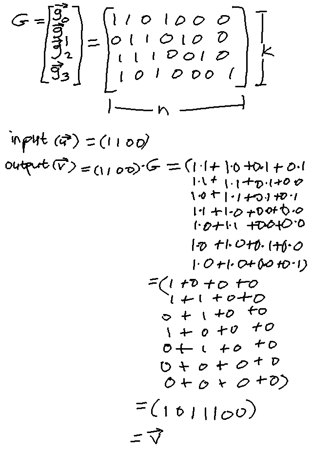
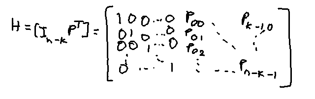
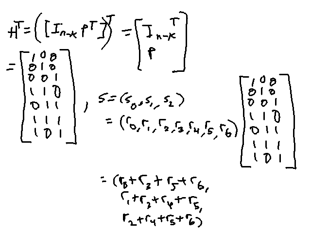
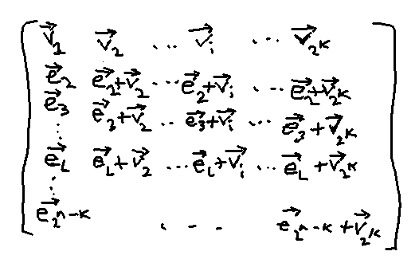
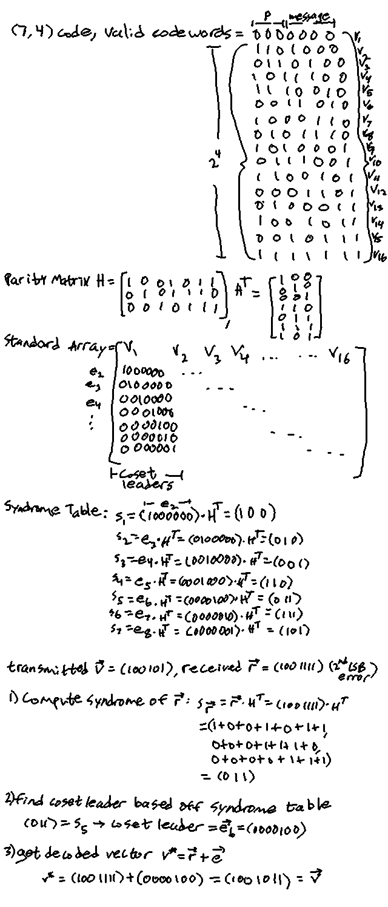
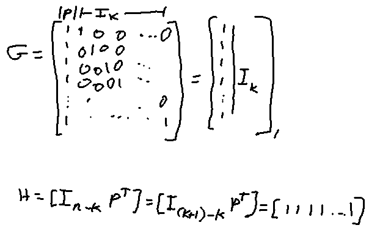

Linear Block Code - all possible 2k codewords form a subspace
of the vector space of all n-tuples over GF(2)
A binary block code is linear IFF the sum (mod 2) of two codewords is also
a codeword
Generator Matrix
Matrix whose rows are linearly independant codewords
These codewords are like the basis vectors for the linear block code
Every codeword can be represented as a linear combination of
these rows
Given input vector u, the encoded codeword v=
u*G
G is is the generator matrix
Which is why the matrix G is called the generator matrix
since it 'generates' codewords from inputs

Encoding example using a (7,4) generator matrix;
addition and multiplication done mod 2
Multiplication can also be done as follows:
(1100)*G = 1*g0 + 1*g1 + 0*g2 + 0*g3
= 1*(1101000) + 1*(0110100)
= (1011100)
Systematic Code
Codeword split into systematic portion and parity check
portion
Systematic portion - information bits, which are the same as the input
bits to the encoder
Parity bits - checking part, which are linear sums of the input/systematic
portion
The above example (7,4) generator matrix is an example of a linear
systematic block code - the four right bits output equal the input
four bits
The generator matrix in this case contains an identity matrix
of size k by k (the matrix above has the identity
matrix on the right side of size 4 by 4)
Denoted G=[PI], where I is the
identity portion
Parity Check Matrix
The non-identity matrix portions when multiplying input u
with the generator matrix G are known as the parity-check
equations
i.e. vj = u0p0,j + u1p1,j ...
uk-1p(k-1),j
Where pi,j are from the parity (P) portion of the
generator matrix G=[PI]
Parity check matrix (H): (n-k) by n matrix
with rows that are
linearly independant and
orthogonal to any vector in the row space of generator matrix G
v is a codeword from G IFF v*HT = 0
Parity check matrix H forms a (n,n-k) linear code
From matrix G=[PI], H can be created by
H=[In-kPT]

Parity check matrix formation
G*HT = 0
Error vector: e = r + v
r = received vector after transmission (rx), possibly with errors
due to noise and such
v = sent, original transmitted vector
If the bits ri and vi are
the same, then their sum will be 0 (1+1=0, 0+0=0)
If the bits are different, their sum will be 1 (1+0=1, 0+1=1)
So any nonzero bit in e is an error for that message index
Syndrome
s = r*HT
s = 0 IFF r is a valid codeword (no errors)
else r has errors

Syndrome calc matrix example using the Generator matrix for
the (7,4) code above
s is a set of linear combinations of the error digits with the parity matrix
Error correction/decoding solves these sets of equations
Since there can be multiple solutions, the one with the least amount
of errors (nonzero) numbers is considered the solution for BSC codes
Example: using the (7,4) code above
r = (1001001) but v = (1001011) (second LSB error)
s = r*HT = (111) =
((e0+e3+e5+e6),(e1+e3+e4+e5),(e2+e4+e5+e6))
which gives us the set of equations
1 = e0 + e3 + e5 + e6
1 = e1 + e3 + e4 + e5
1 = e2 + e4 + e5 + e6
There are 16 possible solutions, but the one with the
fewest errors (1s) is (0000010), so that's our chosen
error vector
To correct r, flip the bits wherever the index in e
is 1, so the second LSB in r is flipped
(1001001) --> (1001011)
Minimum Distance
Hamming weight (w(v)) - the number of 1s in a vector
Hamming distance (d(a,b)) - the number of places the
vectors differ (ex: d([1001011],[0100011]) = 3)
d(a,b) = w(a + b)
minimum distance - dmin is the minimum
d(a,b) where a != b within an entire block
code C.
= min{w(a+b)} where a,b are in
C
= min{w(x)} where x is in C and x!=0
= wmin (dmin = wmin for nonzero vecs) (minimum weight)
The minimum distance for C given its parity matrix H is the smallest
number of columns in H needed to sum to 0
E.g. for the (7,4) example code the minimum distance is 3
since no two columns in H sum to 0, but with
3 cols its possible (ex. [110]+[011]+[101] = [000])
random-error-detecting capability:
An error code with min distance dmin can detect
at most dmin-1 errors
can detect 2n - 2k error patterns
of length n (fraction of total possible codeword combos)
(detectable error patterns)
An 'error' pattern is an impossible sequence of bits,
for length n error patterns it's the entire codeword
There are 2k-1 undetectable error patterns
since a sent codeword could have errors such that
the received bits are another different yet valid
codeword
Block code C can correct all error patterns with
t or fewer errors, where
2t+1 <= dmin <= 2t+2
t = floor((dmin-1)/2)
t is called the random error correcting capability
Standard Array
Really a matrix
Used to map 2n possible received codewords into 2k
decoded vectors
Format:

Where v1...v2k are
all possible valid codewords of C,
e2...e2n-k are the
remaining possible received n-tuples (the possible n-tuples after removing
the valid codewords v1...v2k,
hence the notation ei for 'error'
v1 = 0 (of length n since its an n-tuple)
Each entry in the array is unique (the rows are 'disjoint (no intersections)
and so are the columns')
Each row is a 'coset' of C
The first entry in each row is the 'coset leader/representative'
The columns of the standard array are used to decode the codewords
The correct version of a received vector is in its corresponding
column (any of v1...2k) if the error pattern
(vector with ones where the errors are (e2...2n-k)) which
caused it is any coset leader. Example:
e2 = 100000 (coset leader for row 2)
v3 = 101010 (first entry of column 3)
Received vector r = 001010 = e2+v3 (error in first MSB)
So the correct version is v3, the first entry in the third
column
The codeword will be properly corrected IFF the error pattern
is a coset leader, so the coset leaders are called 'correctable error
patterns'
All n-tuples of the same coset have the same syndrome
Each coset has a different syndrome
Using the above two properties, decoding can be done as follows
(called 'syndrome decoding' or 'table lookup decoding'):
For initialization, create a table of the 2n-k coset
leaders and their corresponding syndrome
Compute the syndrome of the receieved vector r
(s = r*HT)
Use the look up table to find the corresponding coset leader
el for that syndrome (s)
Decode r into the codeword v* =
r + el
Example:

Syndrome decoding example using the (7,4) code
Dual Code
2n-k linear combinations of the rows of parity matrix H
An (n,n-k) linear code Cd
Is the null space of linear (n-k) code (v*w=0,
where v is any codeword from original code and w is any codeword
from the (n,n-k) dual code
Single Parity Check Codes (SPC)
Linear block code with a single parity check digit
The parity digit is the mod 2 sum of all digits in the unencoded message
The encoded message is the parity digit + the original message, so it
generates a (k+1,k) code
Codeword v=(p,u0,u1,u2,...u(k-1))
p=1 if weight of unencoded u is odd (odd number of 1s)
p=0 if weight of unencoded u is even (even number of 1s)
Generator matrix and Parity Check Matrix =

Generator and Parity Check matrix for Systematic SPC
Also called an "even parity check code" because all codewords have even weights
(even amount of 1s)
Repitition Code
Code of (n,1) where the code is either all zeros or all ones
Made by repeating the input bit n times
Generator matrix G=[1,1,1,...,1]
(n,1) rep code and (n,n-1) SPC codes are dual codes of each other
Rep code and SPC codes are combined for constructing "long, powerful codes"
Self Dual Code
Code where its dual code Cd is equal to itself's code C
Its generator matrix is also its parity matrix; G*GT=0
Code of size (n,n/2) and n must be even; its code rate is 1/2